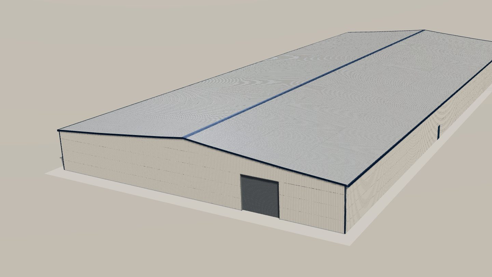
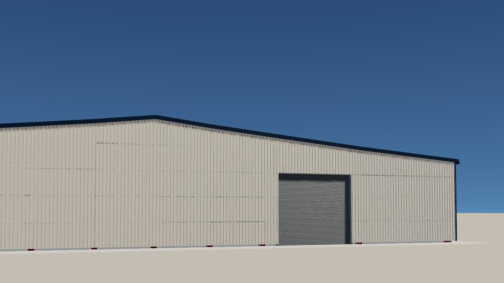
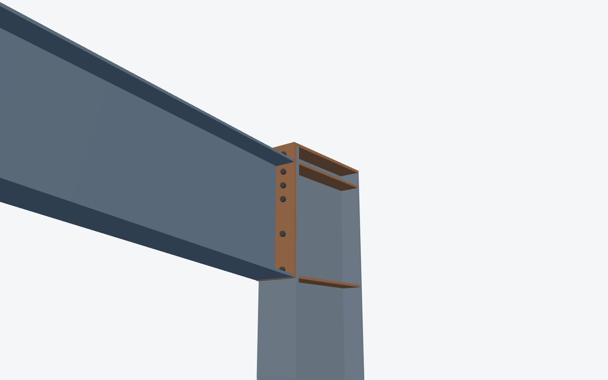
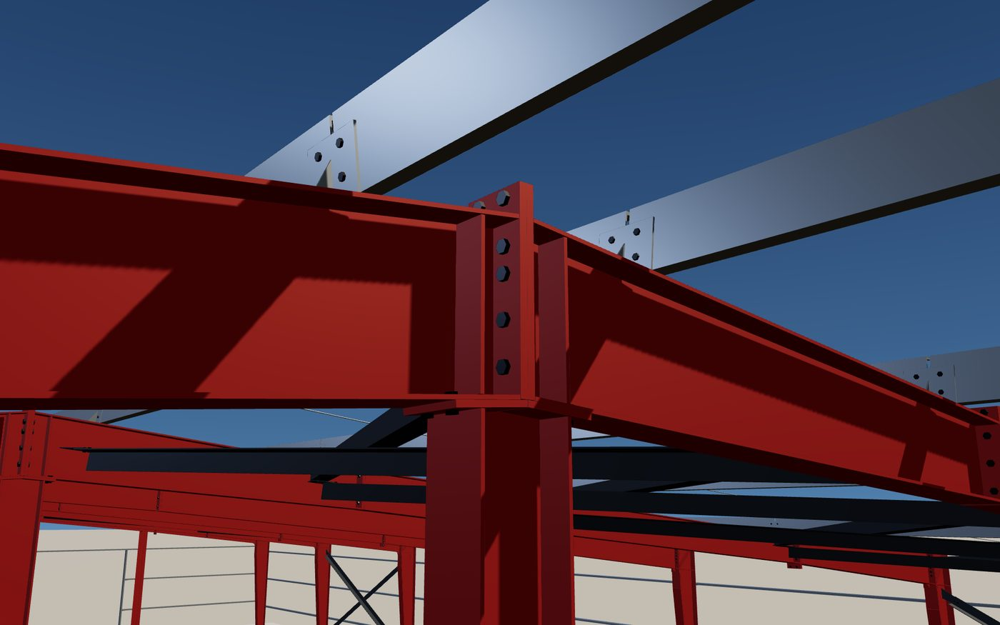
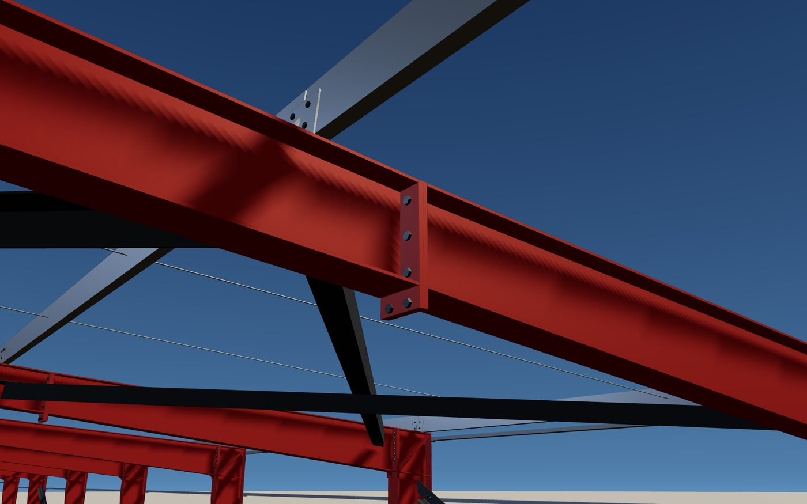
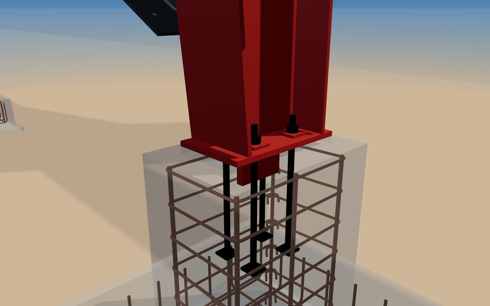
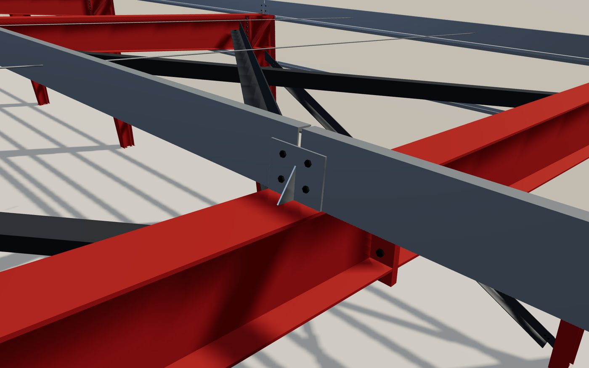
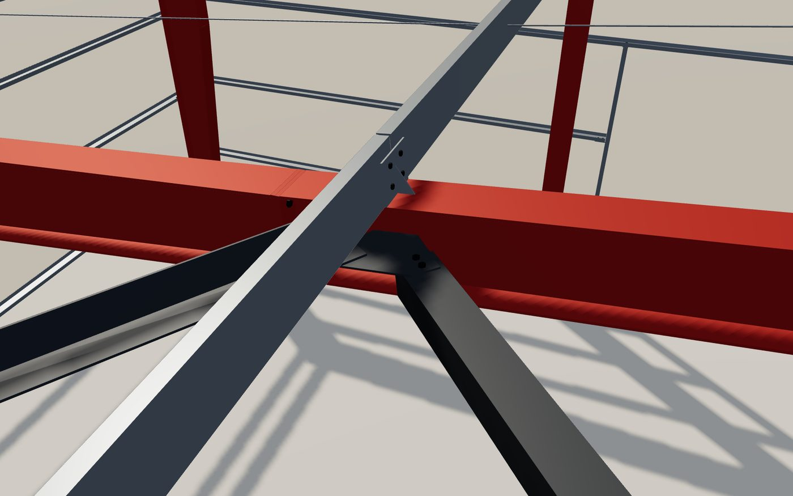
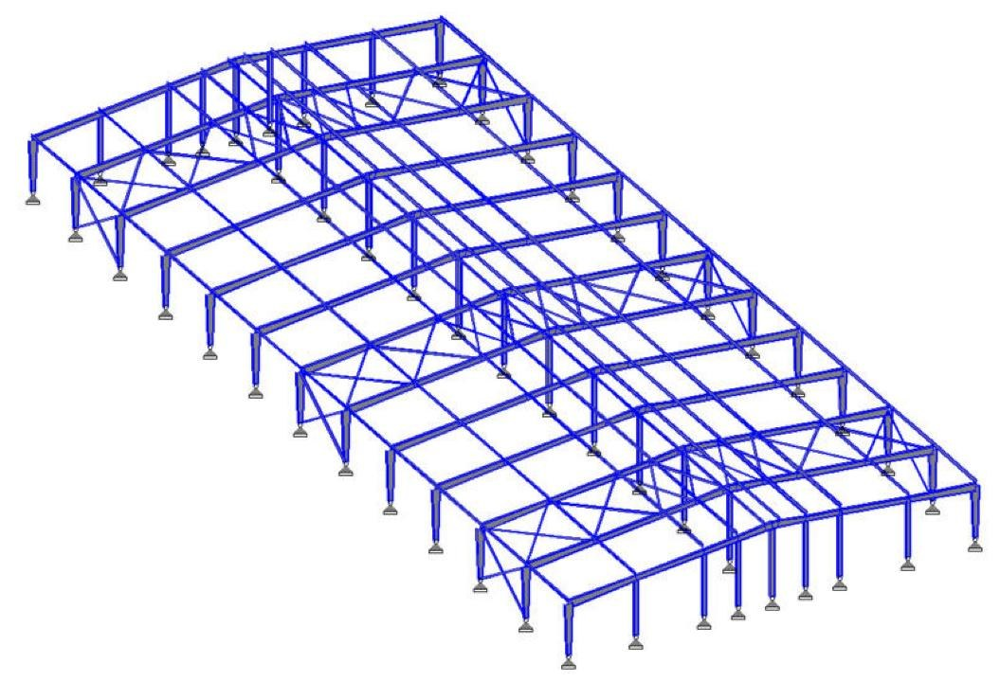
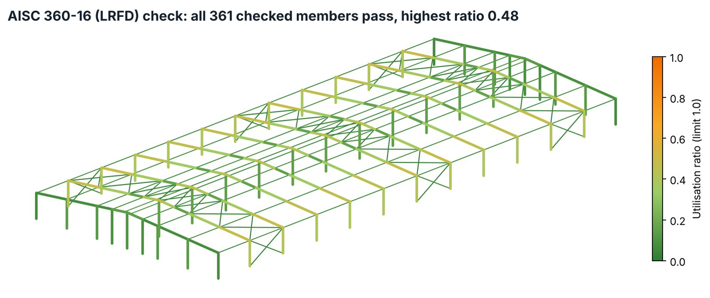

The challenge
The building needed a 40 m wide covered floor, about 91 m long, with a low eave of 5 m. A wide, low building attracts high wind uplift on the roof, and every frame is repeated twelve times, so any extra steel in one frame is multiplied across the whole building.
My approach
- Set out a two-span frame (2 × 20 m) with a central column, so the rafters stay shallow and light instead of spanning the full 40 m.
- Used tapered I-sections for rafters and columns: deep (up to 750 mm) where bending is highest at the eaves and the ridge, shallow where it is not.
- Applied wind loads to IS 875 Part 3 (basic wind speed 33 m/s) and seismic loads to IS 1893 with a response spectrum analysis, then checked 99 load combinations.
- Placed roof and wall bracing in the end and middle bays to carry wind along the length of the building into the foundations.
- Checked all 361 members to IS 800:2007 (limit state). Every member passes; the highest utilisation is 0.91, on a purlin, and 0.87 on the rafters.
- Designed every connection type for the worst forces across all its locations and all 65 ultimate load combinations, then modelled each one in place.
From analysis lines to a real steel model
An analysis model puts every member on its centreline, so members overlap at the joints and no plate or bolt can be placed correctly. I rebuilt the structure as a fabrication-ready model:
- Columns placed with their outer flange on the gridline and the rafters cut back to the column face, so the end plates sit flat on the column flange.
- Rafters broken into transportable pieces at the section changes (6.67 m and 16.67 m from each eave), joined by bolted end-plate splices.
- Purlins rotated to the 1:10 roof slope and seated on welded cleats; bracing angles bolted to gusset plates at both ends.
- Base plates, anchor bolts, shear keys and concrete pedestals at all 51 columns.
The finished model holds 51 columns, 198 rafter pieces and purlins, 60 bracing members, 656 plates and 1,634 bolts.

Cladding, gates and foundations
I then took the model to fabrication level of detail (LOD 400) for the whole building, not only the frames:
- C-section purlins on bolted cleats with sag rods, and C-section wall girts on welded clips with bolted ends.
- 0.5 mm galvanised trapezoidal sheeting on the roof and walls, with ridge cap, rake and corner trims and eave gutters.
- A 5 m roller-shutter gate in each gable, framed with jambs and a header girt, and a personnel door in the side wall.
- 51 isolated pad footings with pedestals, sized from the support reactions, with the footing mesh and pedestal cages modelled bar by bar.
- A clash check of the full steel model with no clashes.




Connections
Each connection was designed by hand to IS 800:2007, including bolt prying (cl. 10.4.7), end-plate bending, column web panel shear, stiffeners and welds. The eave knee was then checked again with a finite-element connection model, which confirmed the bolts and plates and led me to upgrade the stiffener welds to full penetration.






Connection schedule
| Connection | Governing forces (ULS) | Detail | Ratio |
|---|---|---|---|
| Eave knee | M 606 kNm, V 190 kN | End plate 300 × 854 × 25, 12 × M24 8.8 | 0.91 |
| Ridge | M 747 kNm, V 210 kN | End plates 300 × 753 × 32, 10 × M30 8.8 | 0.93 |
| Central column cap | N 371 kN | Cap 300 × 500 × 25, 4 × M24 8.8 | 0.38 |
| Rafter splice, 6.67 m | M 239 kNm | End plates 300 × 602 × 25, 8 × M24 8.8 | 0.86 |
| Rafter splice, 16.67 m | M 180 kNm | End plates 300 × 602 × 20, 8 × M24 8.8 | 0.71 |
| Side column base | N 218, uplift 44, H 123 kN | Plate 300 × 500 × 20, 4 × M24, shear key | 0.77 |
| Central column base | N 379, uplift 40 kN | Plate 300 × 500 × 20, 4 × M24 | 0.27 |
| Gable column base and top | N 78, H 17 kN | Plate 300 × 500 × 20, 4 × M20; 12 mm cap, 2 × M20 | 0.40 |
| Purlin to rafter | V 37 kN | 8 mm cleat, 2 × M16 8.8 | 0.34 |
| Ridge purlins | N 48 kN, M 23 kNm | 12 mm cleat, 4 × M20 8.8 | 0.61 |
| Roof and wall bracing | N 29 kN | 10 mm gusset, 2 × M20 8.8 | 0.16 |
Analysis



Results
- Steel weight of about 133 t, or about 36 kg per m² of floor.
- All members pass, with reserve in the columns (side columns 0.75, central columns 0.51).
- All 13 connection types pass; the highest ratios are 0.93 at the ridge and 0.91 at the eave knee.
- A complete 3D steel model ready for shop drawings, plus support reactions for the foundation design.
- The model carries the full envelope and reinforced foundations, with no clashes in the steel.
Deliverables
- Structural analysis and design report
- Member schedule with tapered section sizes
- Connection design calculations and schedule
- Full 3D model (LOD 400): steel, cladding, gates and doors
- Foundation sizes and reinforcement
- Support reactions for the foundation design